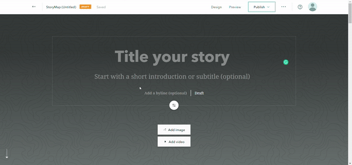

ArcGIS: Map and Story Tutorial
Part 1: Map
1.Open map creation under “Maps” in the menu.
2. Once the map is open, select “Base map” and choose the style you’d like to display.

For the purposes of this tutorial, we will be using Newspaper Map as it fits with the historical theme of our project.
3. Now, in order to add our points and information, we will head to “Add” on the options bar, and choose “Add Map Notes”

It will ask you to create a name and choose a template. You are free to just leave it like that if you don’t already have a template created. The name is for the purpose of naming the layer, so unless you have several layers of Map Notes, you can also just leave it as is and click “Create.”
4. Once your Map Notes have been created, find your location in the search bar. For the purposes of this tutorial, we are searching for the Motown Museum as that is the original home of the Motown Record Label.
5. When the map zooms into your location, you can then click “Add to Map Notes” and this will create a point at the location you need.
6. You can then click “Edit” and make any changes to that point, like changing the title, adding a description and even adding an image of the location.
You also have the option of changing the symbol style and color. When you’re done you can hit close and the information will save.
7. Repeat Steps 4-6 for as many locations as you need on your map.
8. After all of the points are on your map and you are ready to see what everything looks like, click “Details” and zoom out. You can click your points to ensure that your information is all correct.
9. For stylistic purposes, we are going to add a travel line to the map. Click “Edit” and click “Line.” Follow the pop-ups to connect your points.
10. Like with the points, you can also change the description and the style.
11.Finally, save your map. Give it a name and some tags and you’re done!
Part 2: Timeline with StoryMaps
1. Access Storymaps through https://storymaps.arcgis.com/stories
2.Begin with your details like title, subtitle, authors, etc. You can also change the design of the intro to the storymap.

3. For this tutorial, we are going to be using the third design and adding a background image
4. To add information, scroll down until you find a “+” and choose what kind of content style you would like to add. We will be using a sidecar.
5. Start your timeline in the sidecar. You can add titles, paragraphs, pictures, change the styles, etc.

6. To add another page, click the blue + on the bottom right-hand corner and repeat step 5 to continue adding information to your timeline. This is what a full timeline will look like.

7. To add your previously created map, click “Add Map” in a blank sidecar page and add your information like in the previous step.
8. Finally, once you have added your information, publish your timeline in order to share it and/or embed it somewhere else!